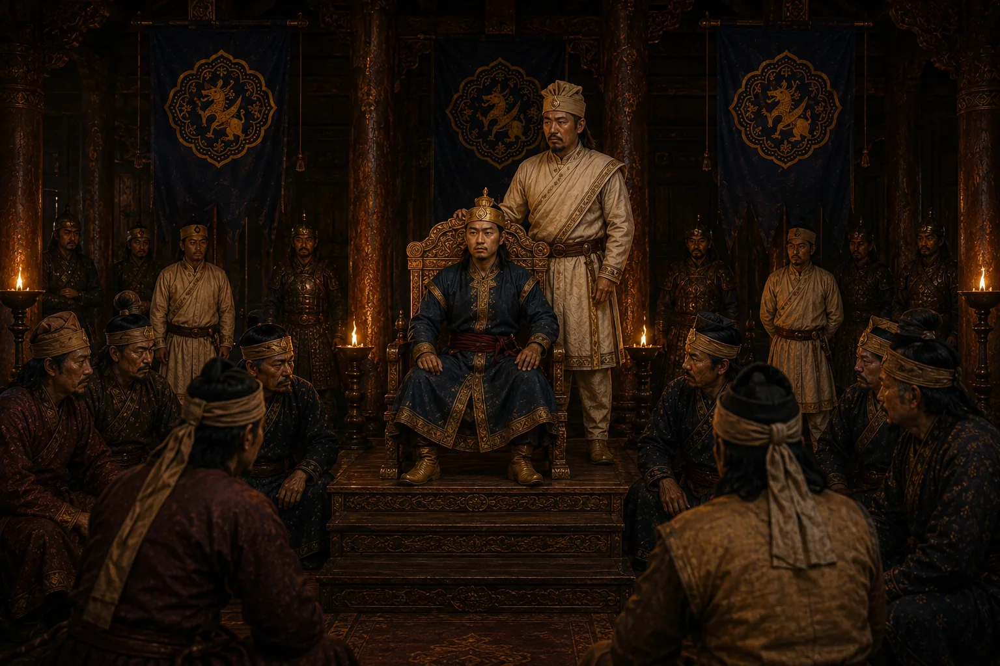

Gobar Raja Crowned as Debera's Puppet
1675 · Six kings in nine years

Debera crowns Tungkhungia prince Gobar (father of Gadadhar Singha) as king to maintain his puppet grip over the throne.
Sources have not yet been catalogued for this record.
People: Debera Borbarua, Gobar Roja